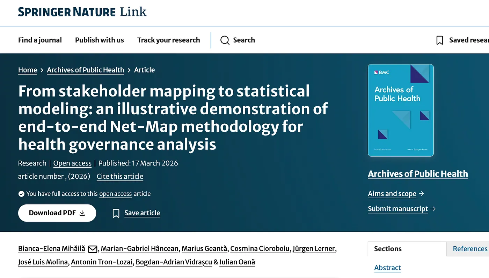

March 24, 2026

Understanding how health systems actually work is much harder than it looks. On paper, governance structures seem clear, e.g., ministries, agencies, funding bodies, local providers. But in reality, influence flows through informal relationships, personal connections, and unwritten rules. Mapping these complex networks is notoriously difficult, especially when much of the system operates below the surface. Some are striving to map the health systems in a metaphorical way or by creating lists of critical actors. Yet, in our most recent publication, we bring forth a mixed-methods research approach.
One pragmatic solution is to turn to those who are already embedded in this complexity: the critical stakeholders of the field (researchers, medical doctors, health experts, policy makers, citizens, patients, etc.). Their knowledge, while subjective, provides a crucial entry point for understanding how things actually function.
This is where the methodology presented in our paper becomes particularly valuable. It combines participatory stakeholder mapping (Net-Map) with statistical network analysis (ERGMs), creating a bridge between experiential knowledge and formal evidence.
Using Net-Map, experts collaboratively identify key actors, relationships, and perceived influence within a system. What makes this approach powerful is not just the mapping itself, but what comes next. The maps are digitized into network data and analyzed using Exponential Random Graph Models. This allows researchers to test which types of relationships, such as (formal) authority or (informal) influence, are actually associated with outcomes like funding flows.
This step is critical. Many participatory methods stop at visualization. In our case, subjective insights are transformed into testable hypotheses, making it possible to move from this is how experts think the system works to this is what the data supports.
The findings highlight something many practitioners intuitively know: systems are not driven solely by formal structures. Informal structures and influence often plays a central role in shaping how resources move and decisions are made.
The potential applications of this methodology are significant.
First, it can serve as a tool for public health governance diagnostics. Whether in cancer prevention, vaccination programs, or primary care reform, organizations (and stakeholders) can use this approach to uncover hidden bottlenecks, identify key brokers, and understand where coordination truly happens (or fails).
Second, it offers strong value for policy design and implementation. Before launching new strategies, policymakers can map the actual network of actors involved and assess whether implementation depends on fragile informal ties, disconnected local actors, or overly centralized influence.
Third, it opens new possibilities for monitoring system change over time. By repeating the mapping and modeling process, it becomes possible to track how governance networks evolve following reforms, funding changes, or new policy initiatives.
Basically, we suggest an approach that connects two worlds that rarely meet: the lived, experience-based understanding of experts and the rigor of statistical modeling. In complex systems, neither is sufficient on its own. Yet together, they can generate insights that are both grounded and testable.
In the end, the real contribution of this work is not just methodological. It shifts the question from what structures exist to how systems actually function. And in doing so, it offers a practical way to make the invisible architecture of governance visible and measurable. Of course, we do not advocate that this is the only way to do it. However, this is our suggestion of doing it.
Further details about our work in the 4P-CAN research project are available at:
This article was originally published on Medium at here.